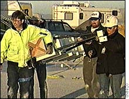
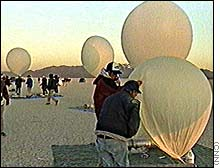

<html><head><title>CNN - Homebrew rocketeers race to be first in space - May 31, 1999</title>

<script language="Javascript" src="cnn-coverage_files/cnn.js"></script>
<link rel="stylesheet" href="cnn-coverage_files/cnn_002.css" type="text/css"><!-- Writer:       rj--><!-- AP:           lx--><!-- Copy editor:  sb--><!-- Web editor:   ms--><!-- Sysop:        ms--></head>


<body bgcolor="#ffffff" text="#000000" link="#000099" vlink="#666666">
<a name="top"></a>

<table width="740" cellpadding="0" cellspacing="0" border="0">
<tbody><tr><td colspan="3">
<table border="0" width="600" cellspacing="0" cellpadding="0"><tbody><tr valign="top"><td width="122"></td><td width="8" align="right"><a href="http://www.cnn.com/ads/e.market/"></a></td><td width="470"></td></tr></tbody></table>
<hr noshade="" width="600" size="1" align="left">
</td>

<!-- third column -->
<td width="7" rowspan="2" bgcolor="#ffffff"><br></td>
<td width="1" rowspan="2" bgcolor="#666666"><br></td>
<td width="7" rowspan="2" bgcolor="#ffffff"><br></td>
<td width="125" rowspan="2" valign="top" bgcolor="#ffffff">
<!-- shop -->


<!-- /shop -->
</td>
<!-- third column -->

</tr><tr valign="top"><td width="125">

<a href="http://www.cnn.com/index.html"></a><br>


<!--TOP-LEVEL NAVIGATION-->  <table border="0" width="125" cellspacing="0" cellpadding="2" bgcolor="#ccccff">


<tbody><tr>   <td><b><font face="Helvetica, Arial,sans-serif" size="1"> <a href="http://www.cnn.com/index.html"><font color="#000000">MAIN PAGE</font></a></font></b></td>

</tr>


<tr>   <td><b><font face="Helvetica, Arial,sans-serif" size="1"> <a href="http://www.cnn.com/WORLD/"><font color="#000000">WORLD</font></a></font></b></td>

</tr>

<tr>   <td><b><font face="Helvetica, Arial,sans-serif" size="1"> <a href="http://www.cnn.com/ASIANOW/"><font color="#000000">ASIANOW</font></a></font></b></td>

</tr>


<tr>   <td><b><font face="Helvetica, Arial,sans-serif" size="1"> <a href="http://www.cnn.com/US/"><font color="#000000">U.S.</font></a></font></b></td>

</tr>


<tr>   <td><b><font face="Helvetica, Arial,sans-serif" size="1"> <a href="http://www.cnn.com/LOCAL/"><font color="#000000">LOCAL</font></a></font></b></td>

</tr>


<tr>   <td><b><font face="Helvetica, Arial,sans-serif" size="1"> <a href="http://www.cnn.com/ALLPOLITICS/index.html"><font color="#000000">POLITICS</font></a></font></b></td>

</tr>


<tr>   <td><b><font face="Helvetica, Arial,sans-serif" size="1"> <a href="http://www.cnn.com/WEATHER/"><font color="#000000">WEATHER</font></a></font></b></td>

</tr>


<tr>   <td><b><font face="Helvetica, Arial,sans-serif" size="1"> <a href="http://www.cnn.com/cnnfn/"><font color="#000000">BUSINESS</font></a></font></b></td>

</tr>


<tr>   <td><b><font face="Helvetica, Arial,sans-serif" size="1"> <a href="http://www.cnn.com/cnnsi/"><font color="#000000">SPORTS</font></a></font></b></td>

</tr>


<tr>   <td bgcolor="#333399"><b><font face="Helvetica, Arial,sans-serif" size="1"> <a href="http://www.cnn.com/TECH/"><font color="#ffffff">TECHNOLOGY</font></a></font></b></td>

</tr>


<tr>   <td bgcolor="#9999ff"><b><font face="Helvetica, Arial,sans-serif" size="1">   <a href="http://www.cnn.com/TECH/computing/"><font color="#000000">computing</font></a></font></b></td>

</tr>


<tr>   <td bgcolor="#9999ff"><b><font face="Helvetica, Arial,sans-serif" size="1">   <a href="http://www.cnn.com/TECH/ptech/"><font color="#000000">personal technology</font></a></font></b></td>

</tr>


<tr>   <td bgcolor="#9999ff"><b><font face="Helvetica, Arial,sans-serif" size="1">   <a href="http://www.cnn.com/TECH/space/"><font color="#cc0000">space</font></a></font></b></td>

</tr>


<tr>   <td><b><font face="Helvetica, Arial,sans-serif" size="1"> <a href="http://www.cnn.com/NATURE/"><font color="#000000">NATURE</font></a></font></b></td>

</tr>


<tr>   <td><b><font face="Helvetica, Arial,sans-serif" size="1"> <a href="http://www.cnn.com/SHOWBIZ/"><font color="#000000">ENTERTAINMENT</font></a></font></b></td>

</tr>


<tr>   <td><b><font face="Helvetica, Arial,sans-serif" size="1"> <a href="http://www.cnn.com/books/"><font color="#000000">BOOKS</font></a></font></b></td>

</tr>


<tr>   <td><b><font face="Helvetica, Arial,sans-serif" size="1"> <a href="http://www.cnn.com/TRAVEL/"><font color="#000000">TRAVEL</font></a></font></b></td>

</tr>


<tr>   <td><b><font face="Helvetica, Arial,sans-serif" size="1"> <a href="http://www.cnn.com/FOOD/"><font color="#000000">FOOD</font></a></font></b></td>

</tr>


<tr>   <td><b><font face="Helvetica, Arial,sans-serif" size="1"> <a href="http://www.cnn.com/HEALTH/"><font color="#000000">HEALTH</font></a></font></b></td>

</tr>


<tr>   <td><b><font face="Helvetica, Arial,sans-serif" size="1"> <a href="http://www.cnn.com/STYLE/"><font color="#000000">STYLE</font></a></font></b></td>

</tr>


<tr>   <td><b><font face="Helvetica, Arial,sans-serif" size="1"> <a href="http://www.cnn.com/SPECIALS/"><font color="#000000">IN-DEPTH</font></a></font></b></td>

</tr>


<tr>

	<td><hr size="1" noshade=""></td>

</tr>


<tr>   <td><font face="Helvetica, Arial,sans-serif" size="1"> <a href="http://www.cnn.com/QUICKNEWS/"><font color="#000000">Headline News brief</font></a></font></td>

</tr>


<tr>   <td><font face="Helvetica, Arial,sans-serif" size="1"> <a href="http://www.cnn.com/almanac/daily/"><font color="#000000">daily almanac</font></a></font></td>

</tr>


<tr>   <td><font face="Helvetica, Arial,sans-serif" size="1"> <a href="http://www.cnn.com/CNN/"><font color="#000000">CNN networks</font></a></font></td>

</tr>


<tr>   <td><font face="Helvetica, Arial,sans-serif" size="1"> <a href="http://www.cnn.com/CNNPromos/cnn.html"><font color="#000000">CNN programs</font></a></font></td>

</tr>


<tr>   <td><font face="Helvetica, Arial,sans-serif" size="1"> <a href="http://www.cnn.com/TRANSCRIPTS/"><font color="#000000">on-air transcripts</font></a></font></td>

</tr>


<tr>   <td><font face="Helvetica, Arial,sans-serif" size="1"> <a href="http://www.cnn.com/SEARCH/quiz/quiz.html"><font color="#000000">news quiz</font></a></font><br><br></td>

</tr>

</tbody></table>


<!--/TOP-LEVEL NAVIGATION -->


<!-- CNN WEB SITES NAV -->

<table border="0" width="125" cellspacing="0" cellpadding="2" bgcolor="#ccccff">

<tbody><tr bgcolor="#000000"> 
    <td><font face="Helvetica, Arial,sans-serif" size="1" color="#ffffff">  CNN WEB SITES:</font></td>
</tr>

<tr><td bgcolor="#ffffff">

<map name="sites"><area shape="rect" coords="0,96,56,115" href="http://www.cnndanmark.dk/"><area shape="rect" coords="0, 82, 55, 95" href="http://cnn.vg.no/"><area shape="rect" coords="0, 69, 66, 82" href="http://cnn.passagen.se/"><area shape="rect" coords="0, 55, 84, 69" href="http://www.cnn.com/cnnpt/"><area shape="rect" coords="0, 40, 75, 55" href="http://www.cnn.com/cnnes/"><area shape="rect" coords="64, 20, 121, 40" href="http://www.cnn.com/cnnfn/"><area shape="rect" coords="0, 20, 64, 40" href="http://www.cnn.com/ALLPOLITICS/"><area shape="rect" coords="64, 0, 121, 20" href="http://www.cnn.com/cnnsi/"><area shape="rect" coords="0, 0, 64, 20" href="http://www.cnn.com/CustomNews/"></map>

	


</td></tr>

</tbody></table>

<!-- /CNN WEB SITES NAV -->

<!--PATHFINDER NAV -->

<table border="0" width="125" cellspacing="0" cellpadding="2" bgcolor="#ccccff">

<tbody><tr bgcolor="#000000"> 
        <td><font face="Helvetica, Arial,sans-serif" color="#ffffff" size="1"> TIME INC. SITES:</font></td>
</tr>

<tr> 
        <form name="pathfinder"></form>
		<td align="center">
        <select name="site" size="1" onchange="goTW()"><option value=""> Go To ... 
		</option><option value="http://www.pathfinder.com/time/">Time.com
		</option><option value="http://www.pathfinder.com/people/">People
		</option><option value="http://jcgi.pathfinder.com/money/plus/index.oft">Money
		</option><option value="http://www.pathfinder.com/fortune/">Fortune
		</option><option value="http://cgi.pathfinder.com/ew/">EW
		</option></select>
		</td>
		
</tr>

</tbody></table>


<!--/PATHFINDER NAV --> 

<!--MORE SERVICES NAV -->

<table border="0" width="125" cellspacing="0" cellpadding="2" bgcolor="#ccccff">

<tbody><tr bgcolor="#000000"> 
        <td><font face="Helvetica, Arial,sans-serif" color="#ffffff" size="1"> MORE SERVICES:</font></td>
</tr>

<tr> 
        <td><font face="Helvetica, Arial,sans-serif" size="1"> <a href="http://www.cnn.com/videoselect/"><font color="#000000">video on demand</font></a></font></td>
</tr>

<tr> 
        <td><font face="Helvetica, Arial,sans-serif" size="1"> <a href="http://www.cnn.com/video_vault/"><font color="#000000">video archive</font></a></font></td>
</tr>

<tr> 
        <td><font face="Helvetica, Arial,sans-serif" size="1"> <a href="http://www.cnn.com/audioselect/"><font color="#000000">audio on demand</font></a></font></td>
</tr>

<tr> 
        <td><font face="Helvetica, Arial,sans-serif" size="1"> <a href="http://www.cnn.com/EMAIL/"><font color="#000000">news email services</font></a></font></td>
</tr>
<tr> 
        <td><font face="Helvetica, Arial,sans-serif" size="1"> <a href="http://email.cnn.com/member/login.page"><font color="#000000">free email accounts</font></a></font></td>
</tr>
<tr> 
        <td><font face="Helvetica, Arial,sans-serif" size="1"> <a href="http://www.cnn.com/desktop/"><font color="#000000">desktop headlines</font></a></font></td>
</tr>

<tr> 
        <td><font face="Helvetica, Arial,sans-serif" size="1"> <a href="http://www.pointcast.com/special/affiliates/cnn.html"><font color="#000000">pointcast</font></a></font><br></td>
</tr>

<tr>
        <td><font face="Helvetica, Arial,sans-serif" size="1"> <a href="http://www.cnn.com/ads/pagenet/"><font color="#000000">pagenet</font></a></font><br><br></td>
</tr>

</tbody></table>

<!--/MORE SERVICES NAV --> 


<!--DISCUSSION NAV -->

<table border="0" width="125" cellspacing="0" cellpadding="2" bgcolor="#ccccff">

<tbody><tr bgcolor="#000000"> 
    <td><font face="Helvetica, Arial,sans-serif" size="1" color="#ffffff"> DISCUSSION:</font></td>
</tr>

<tr> 
    <td><font face="Helvetica, Arial,sans-serif" size="1"> <a href="http://www.cnn.com/boards/"><font color="#000000">message boards</font></a></font></td>
</tr>

<tr> 
    <td><font face="Helvetica, Arial,sans-serif" size="1"> <a href="http://www.cnn.com/chat/"><font color="#000000">chat</font></a></font></td>
</tr>

<tr> 
    <td><font face="Helvetica, Arial,sans-serif" size="1"> <a href="http://www.cnn.com/feedback/scitech.html"><font color="#000000">feedback</font></a></font><br><br></td>
</tr>

</tbody></table>

<!--/DISCUSSION NAV -->


<!-- SITE GUIDES NAV -->

<table border="0" width="125" cellspacing="0" cellpadding="2" bgcolor="#ccccff">

<tbody><tr bgcolor="#000000"> 
    <td><font face="Helvetica, Arial,sans-serif" size="1" color="#ffffff"> SITE GUIDES:</font></td>
</tr>

<tr> 
    <td><font face="Helvetica, Arial,sans-serif" size="1"> <a href="http://www.cnn.com/feedback/help/"><font color="#000000">help</font></a></font></td>
</tr>

<tr> 
    <td><font face="Helvetica, Arial,sans-serif" size="1"> <a href="http://www.cnn.com/INDEX/"><font color="#000000">contents</font></a></font></td>
</tr>

<tr> 
    <td><font face="Helvetica, Arial,sans-serif" size="1"> <a href="http://www.cnn.com/SEARCH/"><font color="#000000">search</font></a></font><br><br></td>
</tr>

</tbody></table>

<!-- /SITE GUIDES NAV -->

<!-- FASTER ACCESS NAV -->

<table border="0" width="125" cellspacing="0" cellpadding="2" bgcolor="#ccccff">

<tbody><tr bgcolor="#000000"> 
        <td><font face="Helvetica, Arial,sans-serif" size="1" color="#ffffff"> FASTER ACCESS:</font></td>
</tr>

<tr> 
        <td><font face="Helvetica, Arial,sans-serif" size="1"> <a href="http://europe.cnn.com/"><font color="#000000">europe</font></a></font></td>
</tr>

<tr> 
        <td><font face="Helvetica, Arial,sans-serif" size="1"> <a href="http://japan.cnn.com/"><font color="#000000">japan</font></a></font><br><br></td>
</tr>

</tbody></table>

<!-- /FASTER ACCESS NAV -->

<!-- WEB SERVICES NAV -->

<table border="0" width="125" cellspacing="0" cellpadding="2" bgcolor="#ccccff">

<tbody><tr bgcolor="#000000"> 
    <td><font face="Helvetica, Arial,sans-serif" size="1" color="#ffffff"> WEB SERVICES:</font></td>
</tr>

</tbody></table>


</td><td width="15"></td>
<td width="460" valign="top">

<br clear="all">
<hr size="1" noshade="">
<!--========================================================-->
<!--===============Paste story between here=================-->
<!--========================================================-->

<font face="helvetica, arial"><h1>Homebrew rocketeers race to be first in space</h1></font>

<table border="0" align="right" cellpadding="0" cellspacing="0" hspace="5" vspace="5" width="220"> 
<tbody><tr><td colspan="2">
<!--===========IMAGE============-->

<!--===========/IMAGE===========-->
</td></tr>

<tr>
<td>
<font size="-2" face="helvetica, arial">
<b>
<!--===========CAPTION==========-->
John Powell, at left, and crew carry his rocket to the launch site.


<br><br>
<table width="216" cellpadding="2" cellspacing="0" border="0" bgcolor="#ffffcc" vspace="5" hspace="5">
<tbody><tr>
<td bgcolor="#ffcc00" colspan="3"><font face="verdana,helvetica,arial,sans-serif" size="1"><b>RELATED VIDEO</b></font></td>
</tr>
<tr>
<td colspan="3"><font face="verdana,arial,helvetica,sans-serif" size="1">CNN's Don Knapp reports on private attempts to reach space<br></font>
<center></center>

</td>
</tr>

<tr>
<td><font face="verdana,arial,helvetica,sans-serif" size="1">Windows Media</font></td>
<td><font face="verdana,arial,helvetica,sans-serif" size="1"><a href="javascript:vod('/video/tech/1999/05/31/knapp.amateur.space.ns28.html','Amateur rocketeers shoot for space prize')"><u>28K</u></a></font></td>
<td><font face="verdana,arial,helvetica,sans-serif" size="1"><a href="javascript:vod('/video/tech/1999/05/31/knapp.amateur.space.ns80.html','Amateur rocketeers shoot for space prize')"><u>80K</u></a></font></td>
</tr>
</tbody></table>


<!--===========/CAPTION=========-->

</b>
</font>
</td><td width="12">  </td>
</tr></tbody></table>


<p><!--date-->

</p><p><font face="Verdana, Arial, Helvetica, sans-serif" size="1" color="#333333"><i><b>May 31, 1999</b><br>
 Web posted at: 4:18 p.m. EDT (2018 GMT)</i></font></p>


<!--/date--><p></p>

<p> BLACK ROCK DESERT, Nevada (CNN) -- With the United States and Russia
working closely together to build a massive space station, its clear that
the geopolitical space race is over.  But another, less publicized race for
the stars is under way in backyards and garages across the United States. 
</p>

<p>
The spoils for the winner: $250,000 and a  place in the history books.
</p>

<p> The prize money is being offered by the Space Frontier Foundation to
the first amateur rocketeer who propels a 4.4 pound (2 kg) payload 124 miles
(200 km) into space. </p>

<p> "What we're trying to do is get your average folks out there involved
in opening space," says Rick Tumlinson of the Foundation.  "As far as we're
concerned, space is a place, not a program." </p>

<p>
One of the amateur hopefuls is John Powell, who has a novel plan for escaping the bonds of Earth's gravity.
</p>

<p>
To save fuel, he's using helium balloons to boost his rocket to 100,000 feet before ignition.  
</p>

<p>
"It's so much safer ... there's so much less fuel, it's a much slower process.  It's the ideal way to go," he says.
</p>

<table border="0" align="left" cellpadding="0" cellspacing="0" hspace="5" vspace="5" width="220"> 
<tbody><tr><td colspan="2">
<!--===========IMAGE============-->

<!--===========/IMAGE===========-->
</td></tr>

<tr>
<td>
<font size="-2" face="helvetica, arial">
<b>
<!--===========CAPTION==========-->
The balloons Powell will use to boost his rocket before ignition.
<!--===========/CAPTION=========-->

</b>
</font>
</td><td width="12">  </td>
</tr></tbody></table>

<p> But during at attempted launch last weekend over Black Rock Desert, the
vulnerability of his plan was exposed by desert winds, which caused a balloon
to burst and launch platform to plummet to the ground. </p>

<p> The next day, Powell's team tried again.  This time, they launched the
rocket, and it set an official altitude record -- above 75,000 feet.  But
it fell short of a space flight. </p>

<p>
Encouraged, Powell says he'll be back on the desert with another rocket within weeks.
</p>

<p>
Another final frontier contender is Tom Rouse, who will try to get his homebrew rocket into space later this summer.
</p>

<p> "I guess you'd call it low-tech," Rouse says of his creation.  "Solid
rocket fuel's been around since the '50s.  We're just using engineering techniques
that will minimize failure." </p>

<p> Regardless of the technology used, the Space Frontier Foundation hopes
its prize will stimulate creativity and spark new minds to think about the
challenges of getting into space cheaply. </p>

<p>
</p><center>

<em>Correspondent Don Knapp contributed to this report.</em>

</center>

<p></p>

<!--========================================================-->
<!--===============Paste story between here=================-->
<!--========================================================-->

<!--========================================================-->
<!--======================= Relateds =======================-->
<!--========================================================-->
<!--========================================================--> 
      <hr size="1">
     <font face="Verdana, Arial, Helvetica, sans-serif" size="1">
     <b>RELATED STORIES:</b> 
      </font><blockquote><font face="Verdana, Arial, Helvetica, sans-serif" size="1"> 
<a href="http://www.cnn.com/TECH/space/9904/30/x.34/">With fanfare, NASA rolls out space plane prototype</a><br>April 30, 1999<br>

<a href="http://www.cnn.com/TECH/space/9903/25/mars.contest/">Contest will send tiny student experiment to Mars</a><br>March 25, 1999<br>
<a href="http://www.cnn.com/TECH/space/9903/23/downlinks/">Prize money propels record-quests</a><br>March 23, 1999<br>
<a href="http://www.cnn.com/TECH/space/9903/01/obrien.3.1/index.html">Space entrepreneur may inspire 'rocket boys' for a new millennium</a><br>March 1, 1999<br>
      </font></blockquote>
<font face="Verdana, Arial, Helvetica, sans-serif" size="1">      </font><hr size="1">
<font face="Verdana, Arial, Helvetica, sans-serif" size="1">   <b>RELATED SITES:</b> 
    </font><blockquote><font face="Verdana, Arial, Helvetica, sans-serif" size="1">        
<a href="http://www.space-frontier.org/" target="NEW">The Space Frontier Foundation</a><br>
<a href="http://www.jpaerospace.com/" target="new">JP Aerospace</a><br>
<a href="http://www.planetary.org/" target="new">The Planetary Society</a><br>
<a href="http://www.nss.org/" target="new">National Space Society</a><br>
      </font></blockquote>

<font face="Verdana, Arial, Helvetica, sans-serif" size="1">   </font><blockquote><font face="Verdana, Arial, Helvetica, sans-serif" size="1"> 
        </font><div align="left">
<font face="Verdana, Arial, Helvetica, sans-serif" size="1"><b>Note:  Pages will open in a new browser window </b>
        </font></div>
<font face="Verdana, Arial, Helvetica, sans-serif" size="1"><font size="1"><em>External sites are not endorsed by CNN Interactive.</em></font></font>
<br>
      </blockquote>
      <table cellpadding="0" cellspacing="0" border="0">
        <tbody><tr valign="top"> 
          <td width="460" bgcolor="#000033" height="13">
          <font face="Verdana, Arial, Helvetica, sans-serif" size="1" color="#ffffff"> 
<b> LATEST HEADLINES:</b></font>
</td></tr><!--[[tr valign=top]]--> 
<tr><td width="460" bgcolor="#ffffcc">
          

         
</td>
</tr></tbody></table>
<!--========================================================-->
<!-- ====================== Relateds =======================-->
<!--========================================================-->


<!-- search box -->

<form name="seek" method="get" action="http://search.cnn.com:80/query.html">
  <table width="460" cellpadding="5" cellspacing="0" border="0" bgcolor="#333399">
    <tbody><tr valign="top"> 
<td bgcolor="#333333"> 
<a href="http://search.cnn.com/" class="white"><b><font face="Verdana, Arial, Helvetica, sans-serif" size="2" color="#ffffff">SEARCH 
  CNN.com</font><font face="Helvetica, Arial, sans-serif" size="1" color="#000000"> 
  </font></b></a> <font color="#000000"><br>
  </font></td>
    </tr>
    <tr valign="top"> 
<td bgcolor="#999999"><font color="#000000"><b><font face="Helvetica, Arial, sans-serif" size="1"><font size="2" face="Verdana, Arial, Helvetica, sans-serif"><font color="#ffffff"> 
  </font></font></font></b><font face="Helvetica, Arial, sans-serif" size="1" color="#ffffff"><font size="2" face="Verdana, Arial, Helvetica, sans-serif" color="#000000">Enter 
  keyword(s)</font></font> 
  <input type="text" name="qt" size="30" value="" maxlength="40">
    <font size="2" face="Verdana, Arial, Helvetica, sans-serif" color="#ffffff"><b><a href="javascript:document.seek.submit()"><font color="#000066">go</font></a>  
    <a href="http://search.cnn.com/help/"><font color="#000066">help</font></a></b></font> 
  </font>
  <input type="hidden" name="qc" value="">
<input type="hidden" name="col" value="cnni">
<input type="hidden" name="qm" value="0">
<input type="hidden" name="st" value="1">
<input type="hidden" name="nh" value="10">
<input type="hidden" name="lk" value="1">
<input type="hidden" name="rf" value="1">

  </td>
    </tr>
  </tbody></table>
</form>

<!-- /search box -->


</td></tr><tr><td colspan="3">
<hr noshade="" width="600" size="1" align="left">


</td></tr>

</tbody></table>

<table border="0" width="600" cellspacing="0" cellpadding="0"><tbody><tr><td width="125" valign="top"><font face="Verdana, HELVETICA, ARIAL, sans-serif" size="1">
<b><a href="#top"> Back to the top</a></b>
</font></td>
<td width="15"> </td><td width="460" valign="top">
<font face="Verdana, HELVETICA, ARIAL, sans-serif" size="1">
<b>© 2001 Cable News Network.</b> All Rights Reserved.<br>
<a href="http://www.cnn.com/interactive_legal.html">Terms</a> under which this service is provided to you.<br>
Read our <a href="http://www.cnn.com/privacy.html">privacy guidelines</a>.</font><br>


</td></tr></tbody></table>

</body></html>